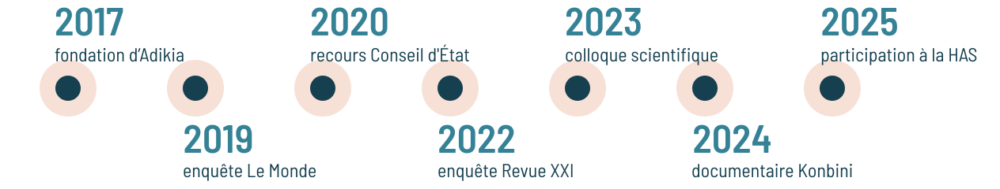
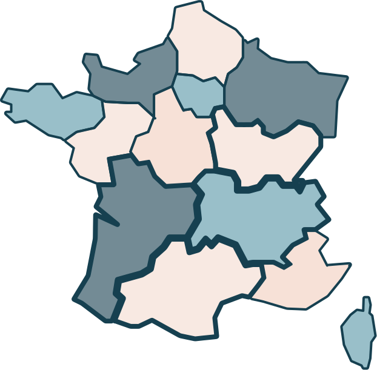
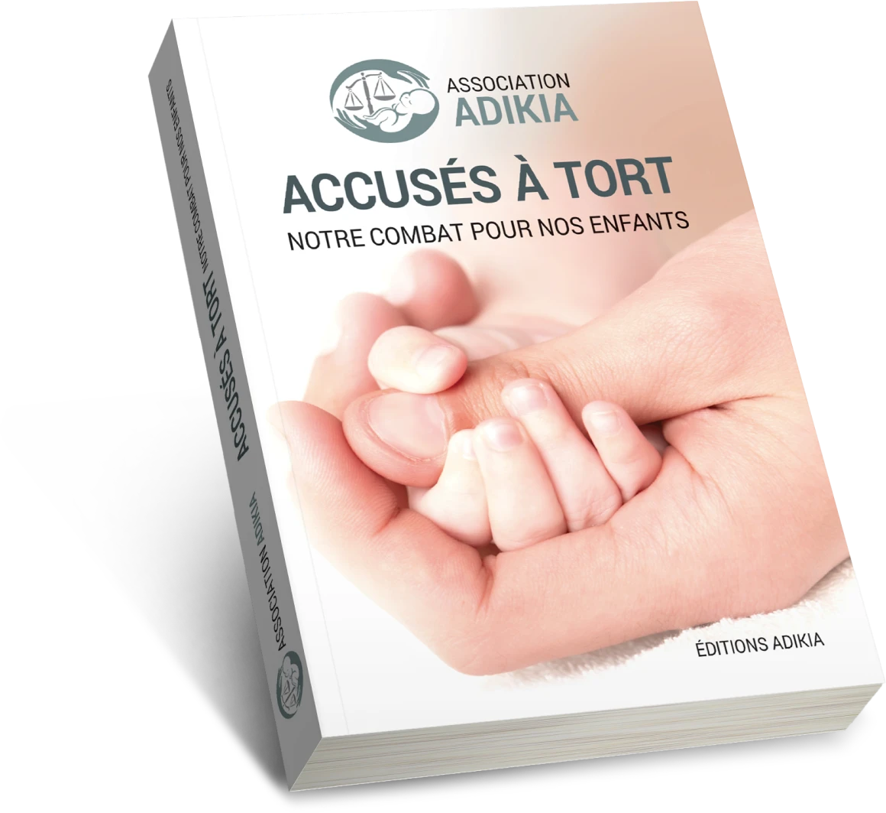

L’association ADIKIA accompagne plus de 1000 parents et assistantes maternelles. Tous sont injustement mis en cause dans des diagnostics erronés de maltraitance sur des nourrissons, du fait de maladies rares ou de fragilités.
Notre histoire
Notre but : mettre un terme aux diagnostics erronés de maltraitance.
En cause, les recommandations de la Haute Autorité de Santé (HAS) sur le syndrome du bébé secoué (SBS) ignorent la plupart des explications alternatives.
Adikia fait partie du groupe de travail HAS chargé de les actualiser en 2026.

Chiffres-clés
- 
- 
- 
Témoignages
Des familles de notre association ont accepté de témoigner sur ADIKIA International, notre organisation internationale qui collecte les témoignages de familles en France et dans le monde.
nos familles

Documentaire Konbini
En 2024, Konbini a réalisé un documentaire de 52 minutes sur des familles de l'association.
Médias
Depuis 2017, de nombreux médias se font l'écho du combat de l'association.
dossier de presse (PDF)


Livre de témoignages
Notre livre présente le témoignage poignant de 15 familles accusées à tort.

Soutenez-nous !
Chaque don, chaque adhésion nous permet de continuer notre action : soutien, échanges, travail scientifique...
Faire un don AdhérerContact
Contactez-nous pour un diagnostic erroné du syndrome du bébé secoué ou de l'enfant battu (fractures) chez un nourrisson.
Un bénévole entrera en contact avec vous.
Après votre adhésion, vous accéderez à un espace de discussion avec les autres familles.
ADIKIA ne fournit aucun conseil juridique ou médical. Consultez des professionnels qualifiés.